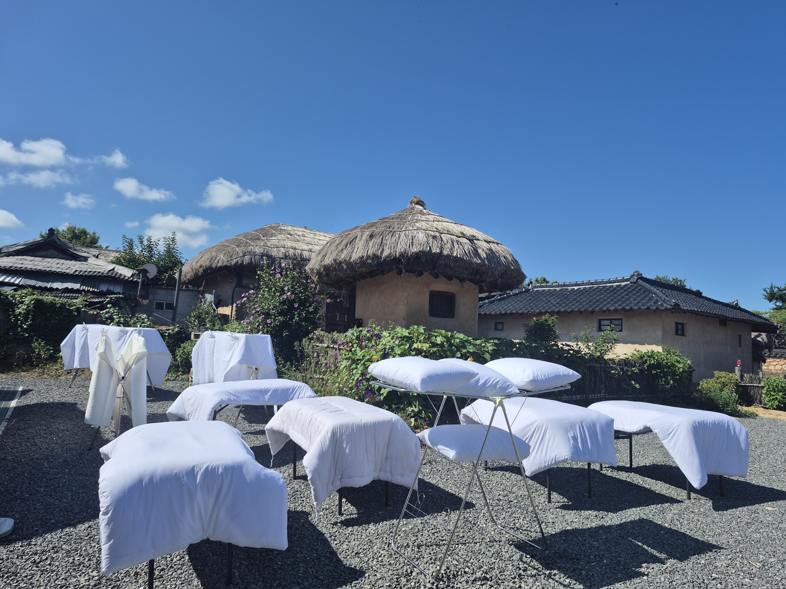

01 체험
주막 · 종가음식 체험
하회마을 현장에서 운영하는 주막·종가음식 체험입니다. 가족과 단체가 직접 만들고 맛보는 90분 단위 프로그램으로 구성합니다.

경북 안동 · 하회마을 · SINCE 2014
하회마을을 찾은 사람이 보고 끝나는 여행 대신, 직접 만들고 맛보고 집에서도 다시 찾게 되는 하루를 설계합니다.
SCROLL
01 소개
전통문화를 보존해야 할 유산으로만 소개하면 관공서는 좋아하지만 손님은 지갑을 열지 않습니다. 저희는 같은 것을 “하회마을에서 90분간 조선시대 주막을 직접 겪는 하루”처럼 구체적인 경험으로 만듭니다.
체험을 마친 손님은 그 자리에서 종가음식을 먹고, 안동 전통주와 특산품을 사서 돌아갑니다. 그리고 집에서 다시 주문합니다. 체험·식사·판매·재구매가 한 조합 안에서 이어지는 구조가 문화링크의 일하는 방식입니다.
조합원이 각자 흩어져 장사하면 남는 것이 없습니다. 공동 브랜드와 공동 고객 명부를 조합이 함께 소유하기 때문에, 시간이 갈수록 강해지는 쪽을 택했습니다.
02 사업
DRAG →
01 체험
하회마을 현장에서 운영하는 주막·종가음식 체험입니다. 가족과 단체가 직접 만들고 맛보는 90분 단위 프로그램으로 구성합니다.

02 식사
체험이 끝난 자리에서 바로 이어지는 식사를 운영합니다. 상차림과 식음 서비스를 직접 맡아 체험과 식사가 끊기지 않게 합니다.

03 판매
주류 소매 면허를 갖춘 조합이 안동 전통주와 특산품 선물세트를 취급합니다. 현장에서 맛본 상품을 온라인으로 다시 주문할 수 있게 연결합니다.

04 공간
하회마을 숙소와 체험 공간을 운영하고, 한복과 행사 장비를 대여합니다. 공간 연출과 실내 시공까지 조합 안에서 처리합니다.

05 기획
공연기획과 행사대행, 광고·디자인, 영상 콘텐츠 제작과 마케팅 교육을 맡습니다. 지자체·기관 사업의 기획부터 정산까지 진행합니다.
03 운영 구조
STEP 01
검색과 현장 QR로 만납니다
04 현장
DRAG →


05 문의
단체 체험, 지자체·기관 행사, 특산품 입점, 조합원 참여까지. 안동에 오시기 전이라면 일정 조율부터 도와드립니다.